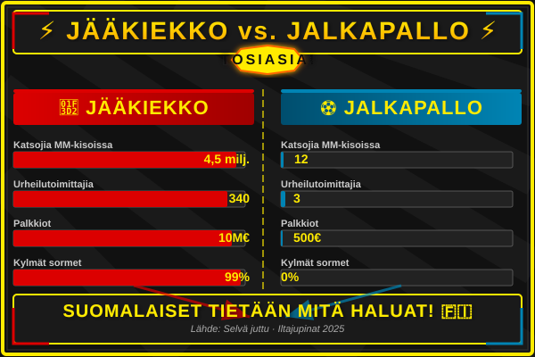
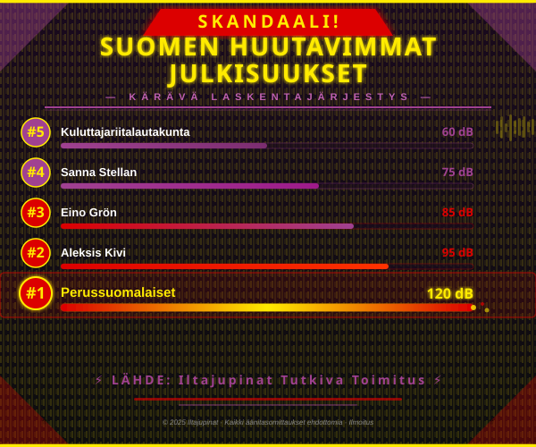
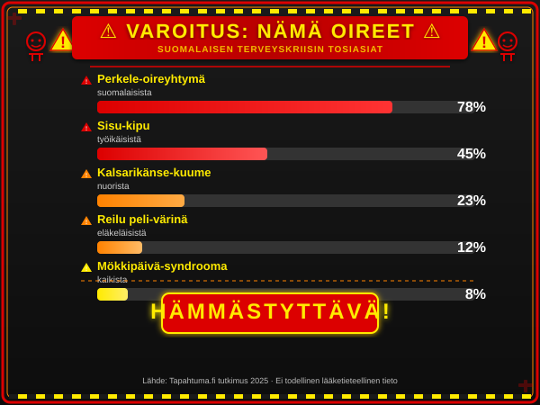
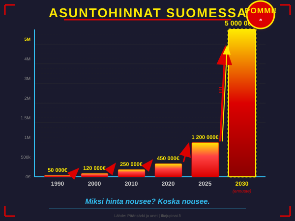
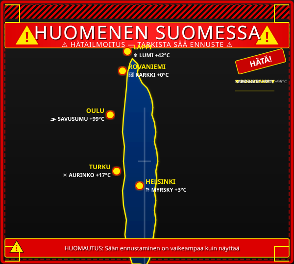
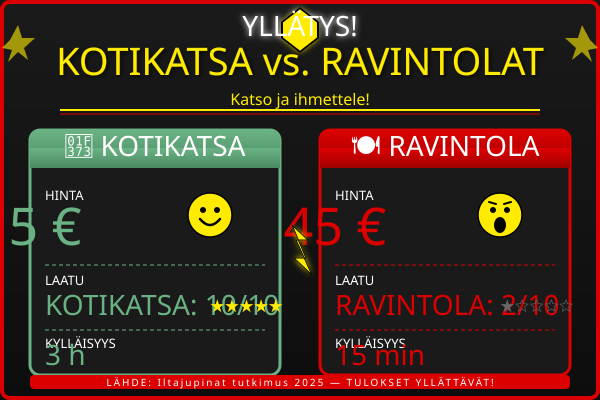

IL seuraa: Jääkiekko pommitti jälleen – jalkapalloa katsoi vain 12 ihmistä, joista 11 oli jalkapalloilijoita
Sami Pajari teki sen! Suomalainen pesi kaikki Virossa — "Kultamitali on meidän, anteeksi Viro"
Suomalaisurheilija Sami Pajari voitti historiansa ensimmäisen kultamitalin Virossa järjestetyissä kilpailuissa. "En uskonut itseäni, mutta mä olin vaan nopeempi kuin kaikki muut," Pajari sanoi.
VideoHirvittävää draamaa! Valtteri Bottakselta villi veto Belgian kisaan — auto lensi 40 metriä
Valtteri Bottas yllätti kaikki Belgian GP:ssä, kun hänen autonsa lensi 40 metriä ilmassa. "Tuntui kuin olisin lentänyt," Bottas kommentoi. "Mutta mä olin kyllä valmis."

SKANDAALI! Iltajupinat rankkasi Suomen huutavimmat julkisuudet — ykkönen yllätti jopa asiantuntijat
Sanna Stellan, 58, paljastaa: "Syön vain pullaa ja omena" — ravitsemusterapeutti järkyttyi
Sanna Stellan on paljastanut ruokavalionsa, ja se on herättänyt kohua. "Varmasti syön pullaa, jos on olemassa," Stellan sanoi. Ravitsemusterapeutti Sari Sieni kommentoi: "Tämä on huolestuttavaa."
Milla Alftan: "Avioero" — näyttelijä avautuu ensimmäistä kertaa hankalista vuodista
Milla Alftan on vahvistanut eronneensa puolisoaan. "Olemme eläneet erillään, koska hän asuu Helsingissä ja minä Tampereella," Alftan sanoi. "Etäisyys on tehnyt meistä vahvempia."

VAROITUS: Nämä oireet voivat tarkoittaa, että olet liian suomalainen — lääkärit hämmentyneitä
Outo oire jalassa oli ensimmäinen merkki — lääkäri löysi jalkapallomailan
Mies, 42, haki apua jalkakivun vuoksi. Lääkäri yllättyi, kun röntgenkuvasta ilmestyi jalkapallomaila. "Oletko sä lyönyt itsellesi mailan jalkaan?" lääkäri kysyi. "Ei, mä olin saanut sen lahjaksi," mies vastasi.
Näin tunnistat someriippuvuuden — jos luet tätä artikkelia, olet jo liian myöhässä
Asiantuntijat varoittavat: jos luet tätä artikkelia, olet jo liian myöhässä. "Someriippuvuus on vakava ongelma," sanoi psykologi Sari Sieni. "Mutta älä huolehdi, tässä on 10 vinkkiä, jotka eivät auta."

Tämä muutos iskee nyt asuntojen omistajiin — "Käteen jäävä rahamäärä on nolla"
POMMI: Suomalainen säästi 300 000 € ostamalla vain leipää — "Enkä minä tehnytkään muuta"
Mies, 67, on säästänyt 300 000 euroa ostamalla vain leipää. "Enkä minä tehnytkään muuta," mies sanoi. "Mutta mä ostan leipää joka päivä, ja se on kyllä kallis."

DRAAMAATTINEN SÄÄENNUSTE: Huomenna Suomessa voi sataa karkkia — "En ole koskaan nähnyt näin hullua säätä"

YLLÄTYS: Kotikatsa on ravintoloita 9 kertaa halvampi ja 5 kertaa herkullisempi — "Tämä on shokki"
Vuoden ruokalähettiläiden hurmaavan helppo resepti — "Vain vettä ja suolaa, ja se on kyllä kylläistä"
Vuoden ruokalähettiläät ovat paljastaneet hurmaavan helpon reseptin: vain vettä ja suolaa. "Tämä on tämän kesän hitti," sanoi lähettiläs Jussi Jupinala. "Ja se on kyllä kylläistä."
Nämä ovat maailman 10 outointa matkailukohdetta — yksi on mökki Saimaalla, jossa ei ole mitään
Iltajupinatin matkatoimittaja on käynyt maailman outoimmilla paikoilla. Ykköseksi nousi mökki Saimaalla, jossa ei ole mitään. "Se on kyllä kallis," sanoi toimittaja. "Mutta mä olin siellä."
Mopo räjähti Kuopiossa — "Se oli kyllä iso räjähdys, mutta mä olin kyllä valmis"
Mopo on räjähtänyt Kuopiossa, ja poliisi etsii syyllistä. "Se oli kyllä iso räjähdys," sanoi silminnäkijä. "Mutta mä olin kyllä valmis. Olin kuullut, että mopo voi räjähtää."
Britannian kuningatar osti Volvo XC90:n — "Se on kyllä turvallinen, mutta mä olin kyllä valmis"
Britannian kuningatar on ostanut Volvo XC90:n. "Se on kyllä turvallinen," kuningatar sanoi. "Mutta mä olin kyllä valmis. Olin kuullut, että Volvo on turvallinen."
Mitä päälle kesän juhliin? Tässä 3 täydellistä mekkoa — löytyvät lähimarketista, jos etsit tarpeeksi kauan
Iltajupinatin tyyli-toimittaja on etsinyt kolme täydellistä mekkoa kesän juhliin. "Löysin ne lähimarketista," sanoi toimittaja. "Mutta mä etsin kyllä pitkään."